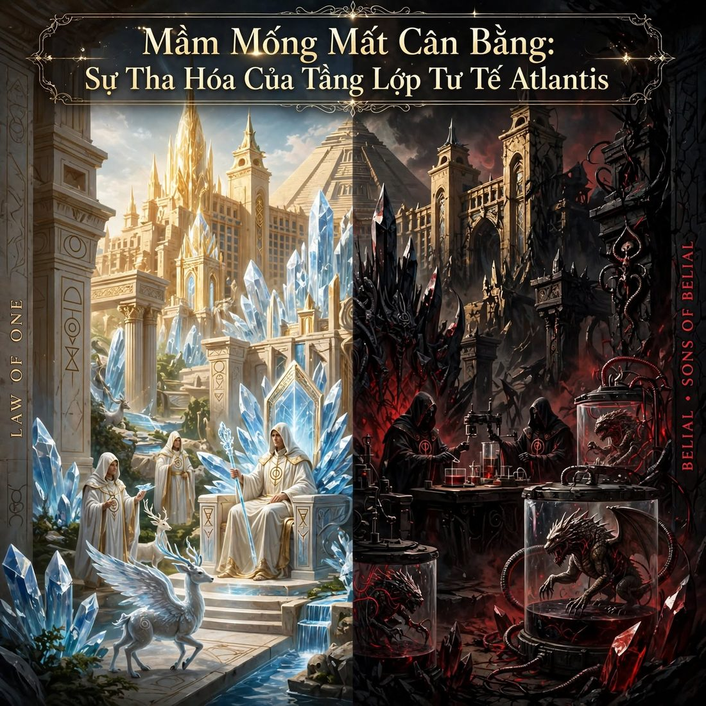
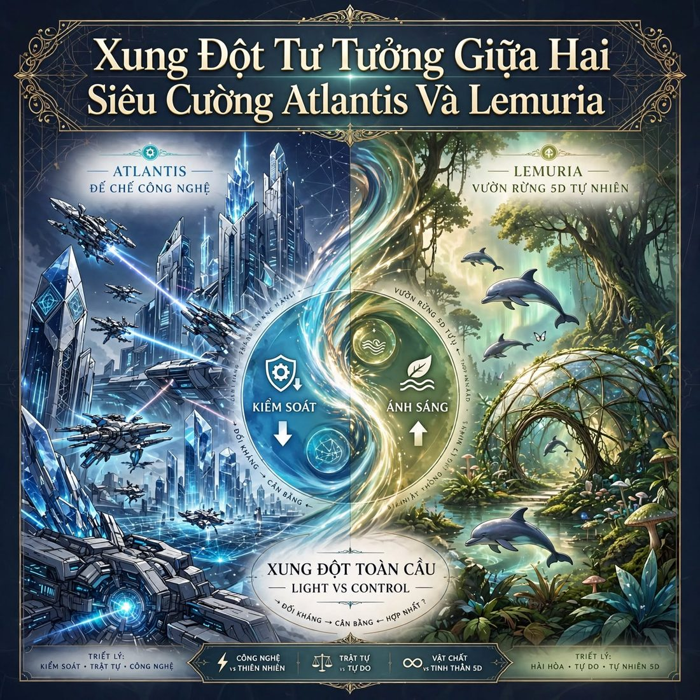
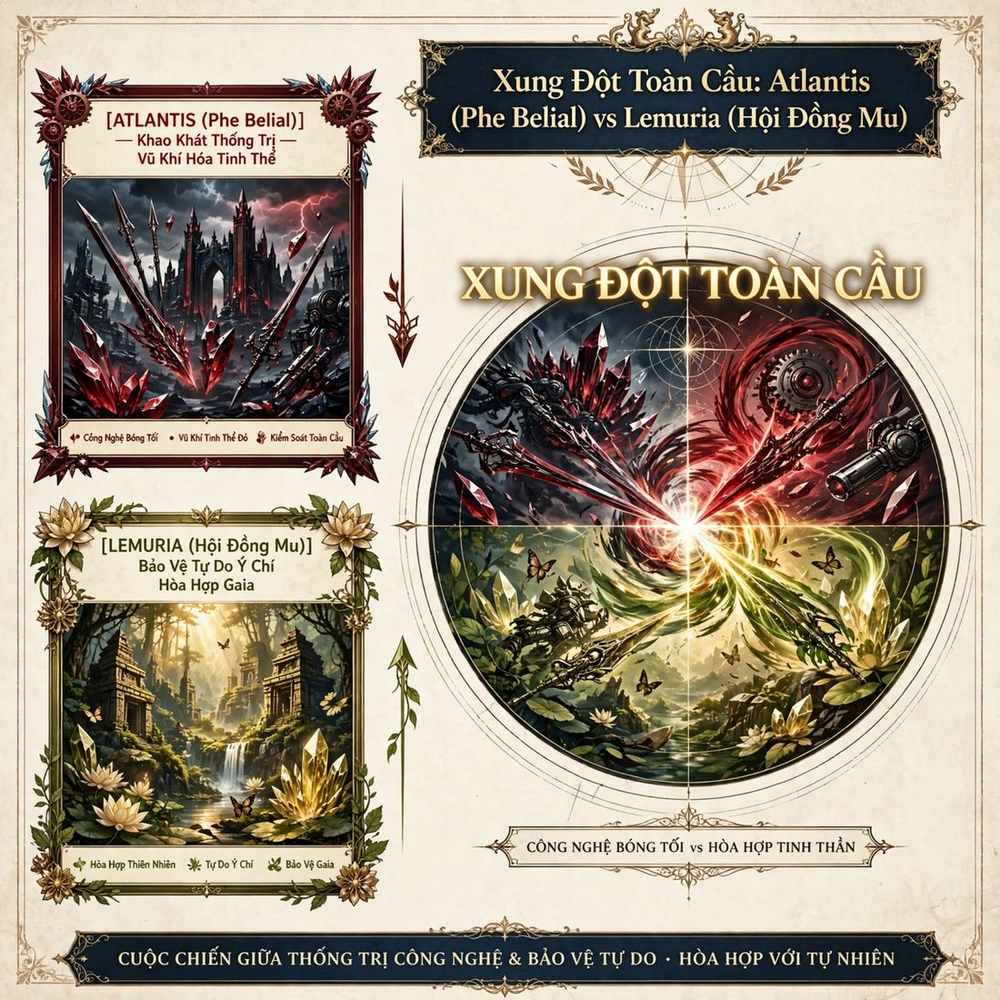
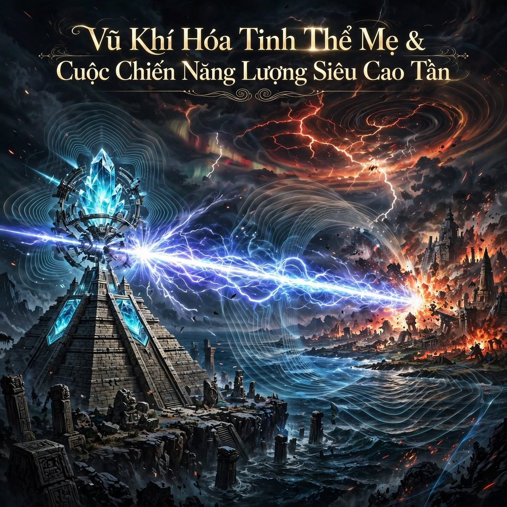
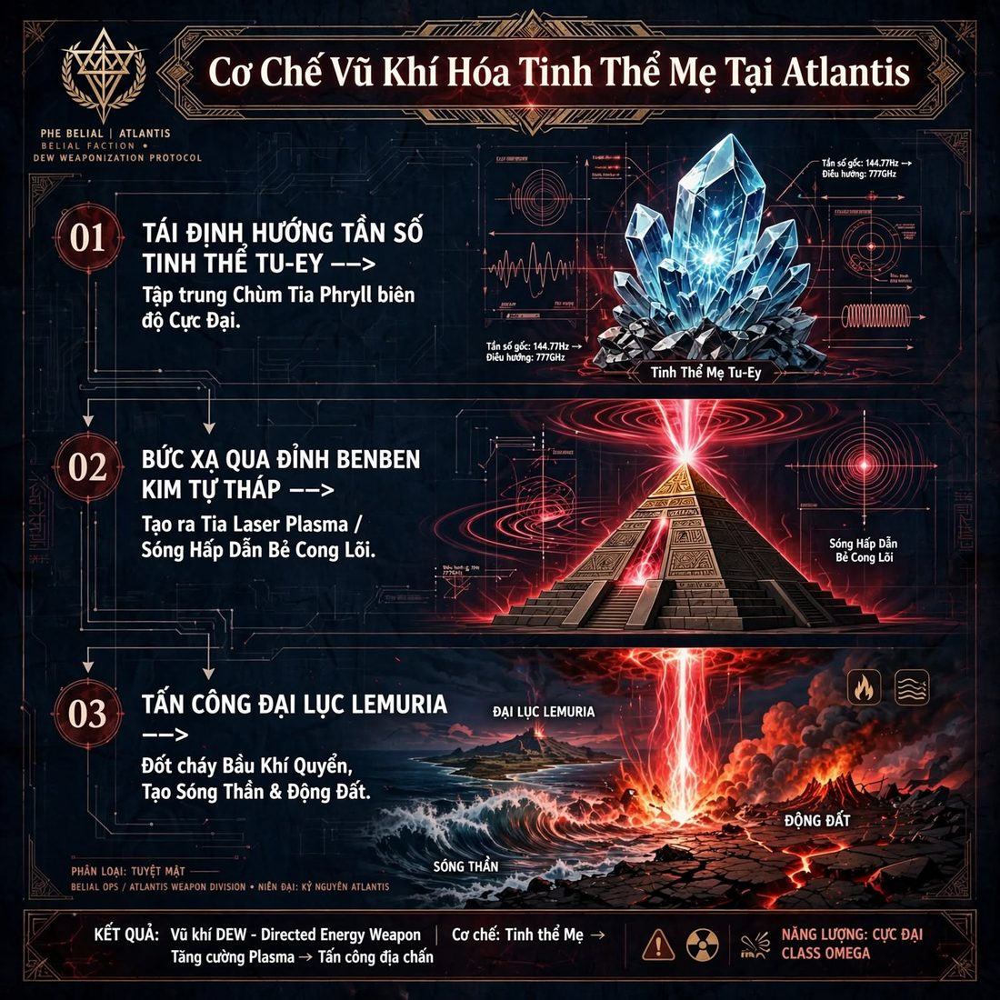
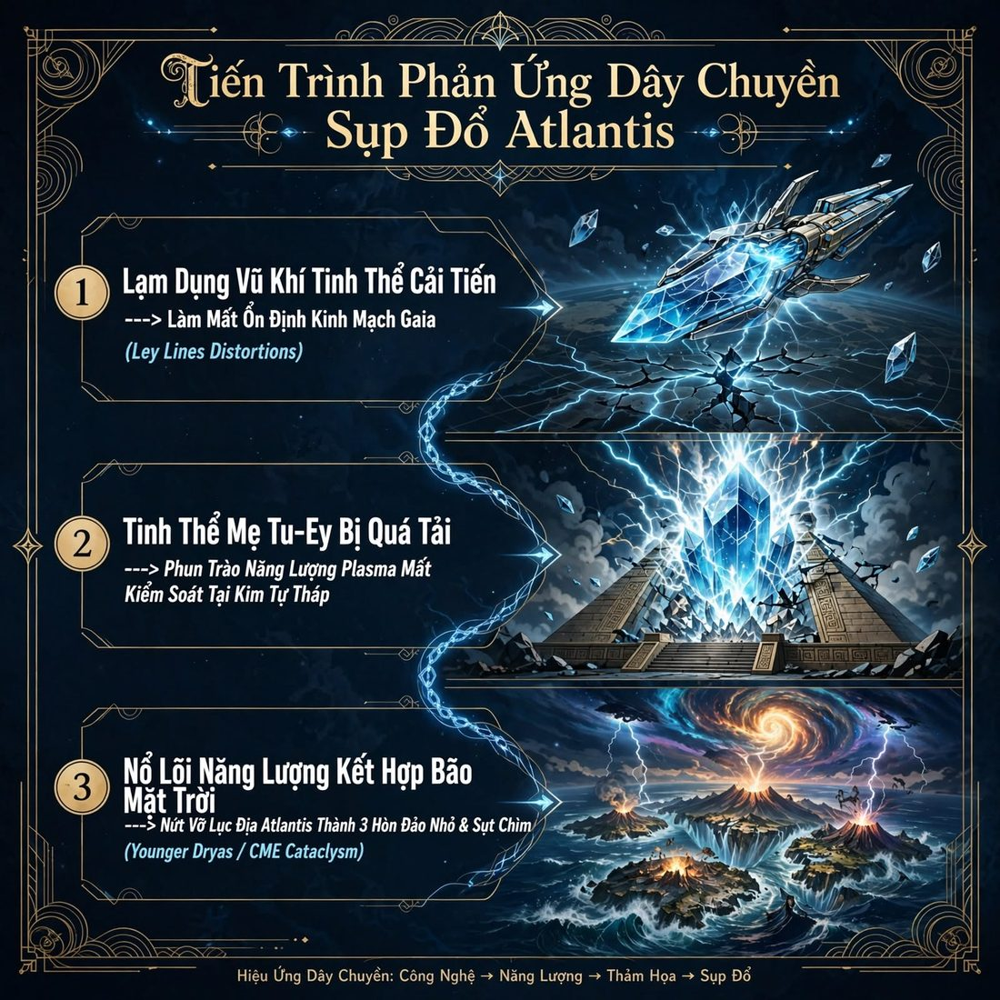
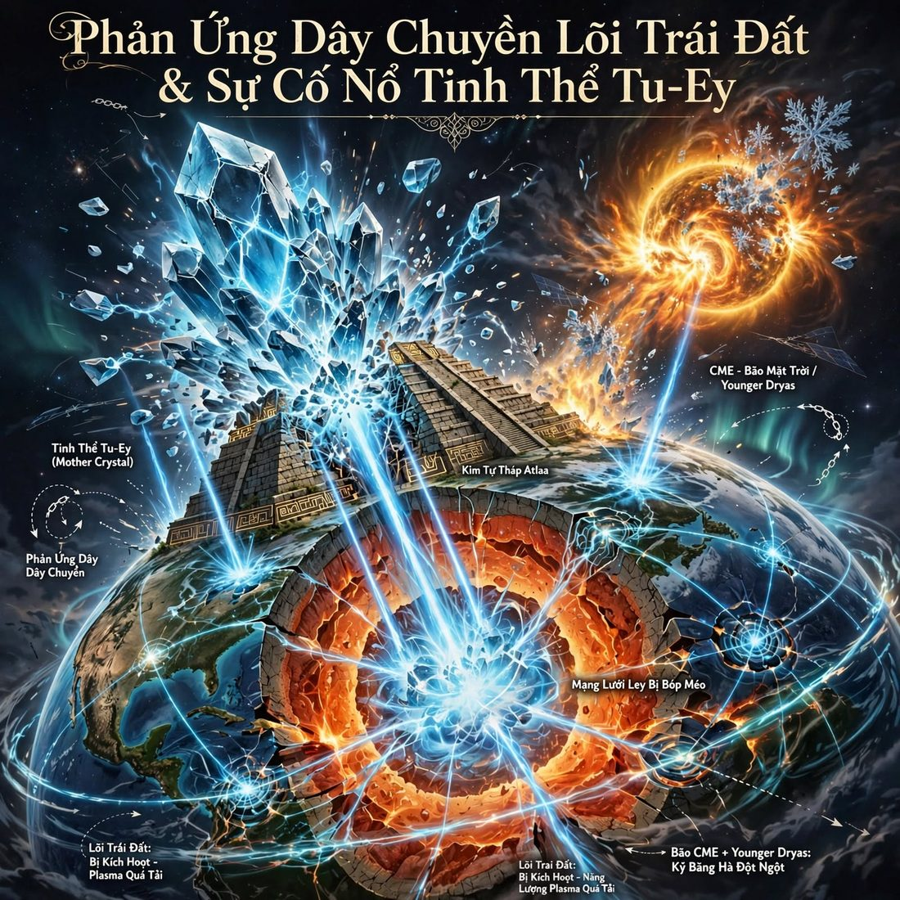
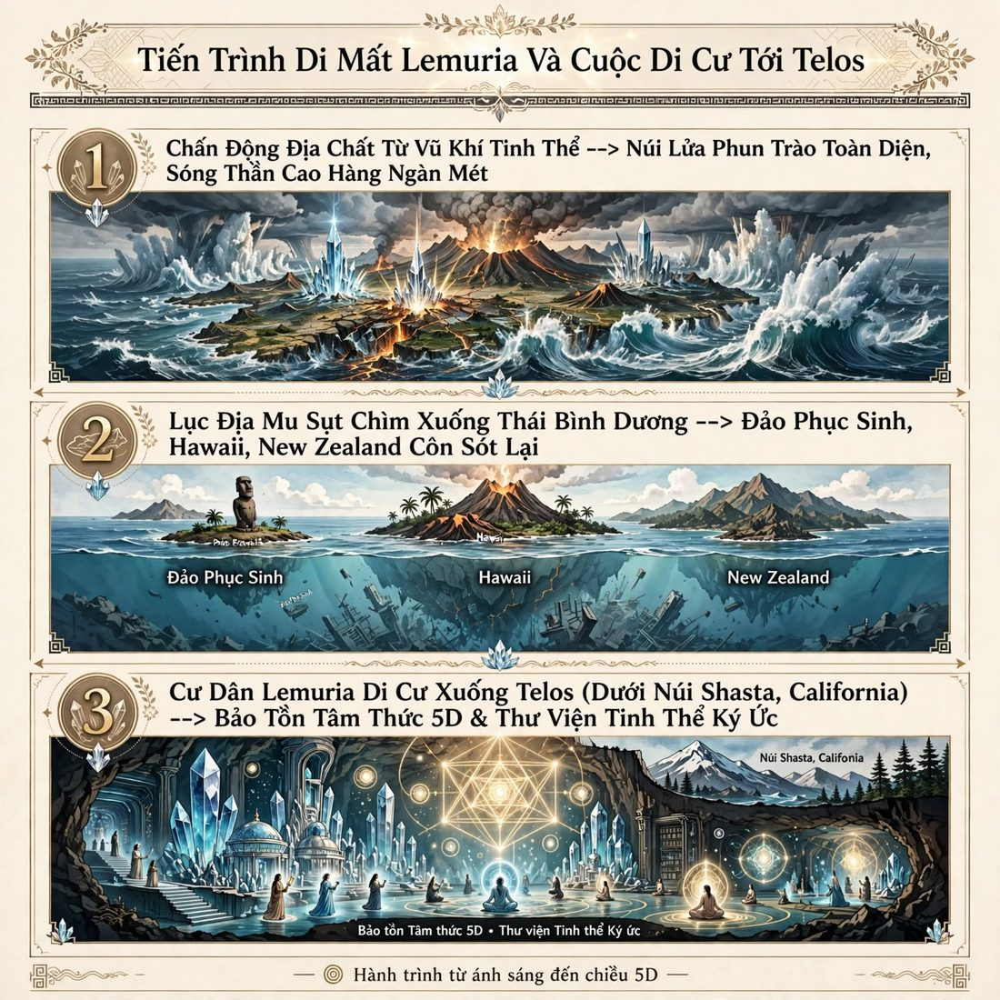

Trang chủ / Chuyên đề 10: Lịch Sử Bị Che Giấu & Nền Văn Minh Cổ Đại / Kỳ 93
Chuyên đề 10 · Kỳ 93 / 100
ĐẠI CHIẾN ATLANTIS VS LEMURIA & THẢM HỌA TINH THỂ NĂNG LƯỢNG

1. Mầm Mống Mất Cân Bằng: Sự Tha Hóa Của Tầng Lớp Tư Tế Atlantis

Thời kỳ hoàng kim rực rỡ của nền văn minh Atlantis bắt đầu xuất hiện những vết nứt sâu sắc khi xã hội tiến vào Kỷ Nguyên Bò Cạp (Age of Scorpio). Sự thịnh vượng vật chất quá mức, kết hợp với việc sở hữu những nguồn năng lượng vũ trụ khổng lồ nhưng thiếu đi sự định tâm tại Luân xa Tim, đã đẩy tầng lớp lãnh đạo Atlantis vào con đường tha hóa tâm thức.
Theo các tài liệu giải mật từ Matias De Stefano (Initiation - Gaia), Swaruu, Alex Collier và Elena Danaan, sự phân hóa xã hội tại Atlantis chia thành hai khối tư tưởng đối lập gay gắt. Tầng lớp lãnh đạo tha hóa — được gọi là Hội Nhóm Belial (Sons of Belial) — bắt đầu rời xa các nguyên tắc đạo đức thiên hà:
- Thí nghiệm lai tạo di truyền quái dị: Họ lợi dụng công nghệ sinh học Anunnaki và Crysta-Tech để lai tạo vô trách nhiệm giữa DNA con người với các loài động vật, tạo ra các sinh vật biến dị (Chimeras), người lai thú để làm nô lệ lao động và giải trí.
- Khao khát thống trị toàn cầu: Họ xem công nghệ Tinh thể Mẹ Tu-Ey không chỉ là nguồn phát điện, mà là một công cụ sức mạnh để ép buộc tất cả các vùng đất và nền văn minh khác trên Trái Đất (bao gồm cả Lemuria) phải khuất phục dưới sự kiểm soát của Atlantis.
2. Xung Đột Tư Tưởng Giữa Hai Siêu Cường Quốc
| Tiêu Chí So Sánh | Nền Văn Minh Lemuria (Mu) | Đế Chế Atlantis (Giai Đoạn Suy Thoái) |
|---|---|---|
| Triết Lý Sống Cốt Lõi | Hòa hợp 5D, Tình yêu Vô điều kiện, tôn trọng Mẹ Gaia | Thống trị công nghệ, kiểm soát năng lượng, bản ngã 3D |
| Công Nghệ Sử Dụng | Âm học Solfeggio, hình học thiêng liêng, năng lượng nước | Tinh thể Mẹ Tu-Ey, vũ khí Plasma, Cổng Sao nhân tạo |
| Thái Độ Với Tự Nhiên | Sống giữa tự nhiên, bảo tồn sinh thái, hợp nhất | Khai thác kiệt quệ lõi Trái Đất, biến đổi di truyền |
| Quan Điểm Ngoại Giao | Tự do ý chí, không xâm lược, bảo tồn hòa bình | Bành trướng lãnh thổ, nô dịch hóa các dân tộc khác |


Sự bành trướng của đế chế Atlantis nhanh chóng vấp phải sự phản đối kiên quyết từ nền văn minh Lemuria (Mu) ở khu vực Thái Bình Dương. Hai siêu nền văn minh đại diện cho hai triết lý sống hoàn toàn trái ngược nhau trong Đa vũ trụ: một bên là triết lý hòa hợp 5D, tình yêu vô điều kiện, tôn trọng Mẹ Gaia; bên kia là thống trị công nghệ, kiểm soát năng lượng và bản ngã 3D.
Khi các cuộc đàm phán ngoại giao tần số thất bại, Hội nhóm Belial đã ra lệnh thực hiện một chiến dịch vũ khí hóa tinh thể mẹ. Họ tái định hướng dải tần số của viên Tinh thể Mẹ Tu-Ey, chuyển đổi năng lượng sinh lực Phryll chữa lành thành dòng plasma năng lượng hủy diệt, biến trái tim năng lượng của Atlantis thành vũ khí định hướng năng lượng (DEW — Directed Energy Weapon).
3. Thảm Họa Tinh Thể Năng Lượng Và Tiến Trình Di Mất Lemuria





Cú sốc từ việc vũ khí hóa Tinh thể Mẹ đã đẩy toàn bộ hệ thống năng lượng Trái Đất vào trạng thái bất ổn. Năng lượng Phryll bị biến dạng thay vì nuôi dưỡng địa từ trường lại trở thành những đợt xung kích phá hủy cấu trúc tinh thể của lục địa, gây ra các trận địa chấn dữ dội làm sụp chìm phần lớn lục địa Lemuria xuống Thái Bình Dương.
Các Hội đồng Tư tế Lemuria, nhờ khả năng thấu thị, đã biết trước thảm họa nhiều thập kỷ. Họ đã chuẩn bị sẵn sàng kế hoạch di tản tinh hoa xuống Thành phố Tinh thể Telos dưới núi Shasta, đồng thời nén toàn bộ ký ức văn minh Lemuria vào 12 sợi DNA etheric của những người sống sót, để lại một di sản ký ức chờ ngày thức tỉnh trong Kỷ nguyên 5D.
Thảm họa tinh thể năng lượng dạy cho chúng ta một bài học vũ trụ quan trọng: quyền năng năng lượng của công nghệ tinh thể chỉ an toàn khi được vận hành trong tần số của tình yêu thương vô điều kiện. Khi công nghệ tách rời khỏi đạo đức tâm thức, nó sẽ tự quay lại phá hủy chính nền văn minh sáng tạo ra nó.